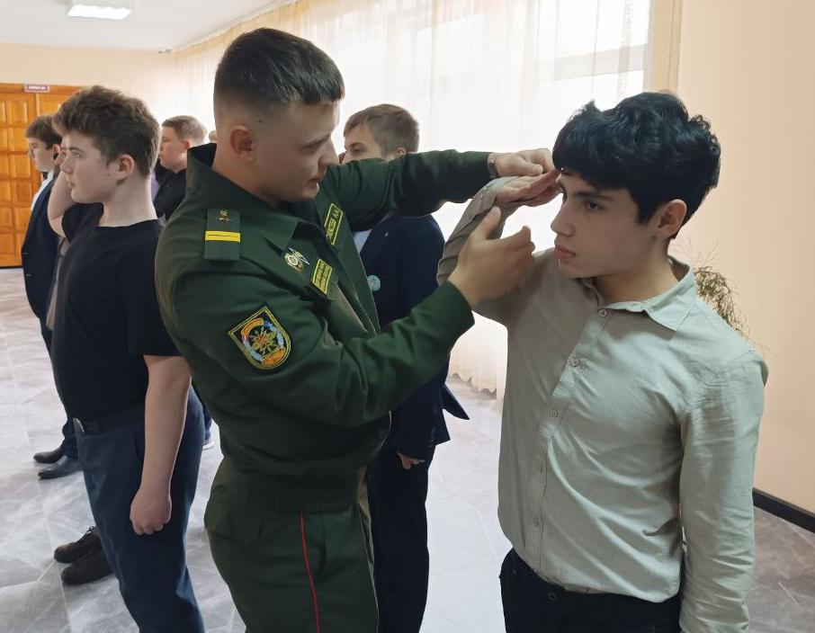
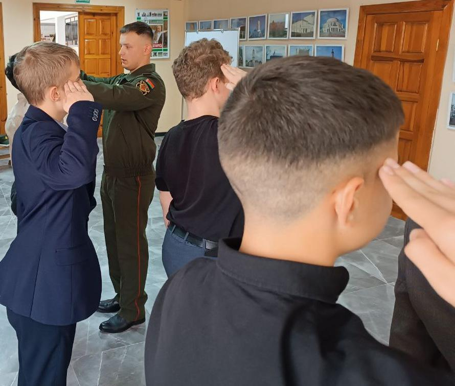
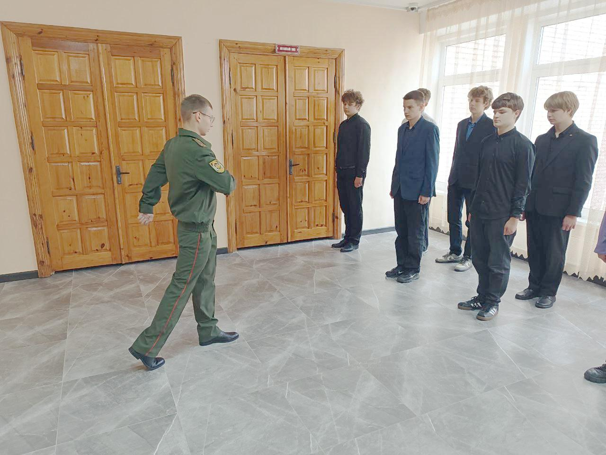
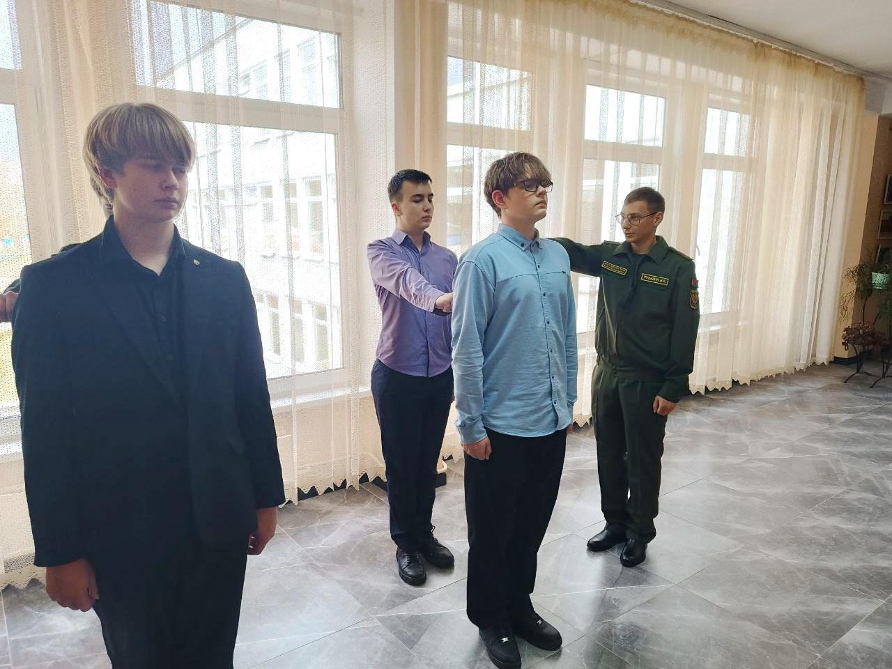
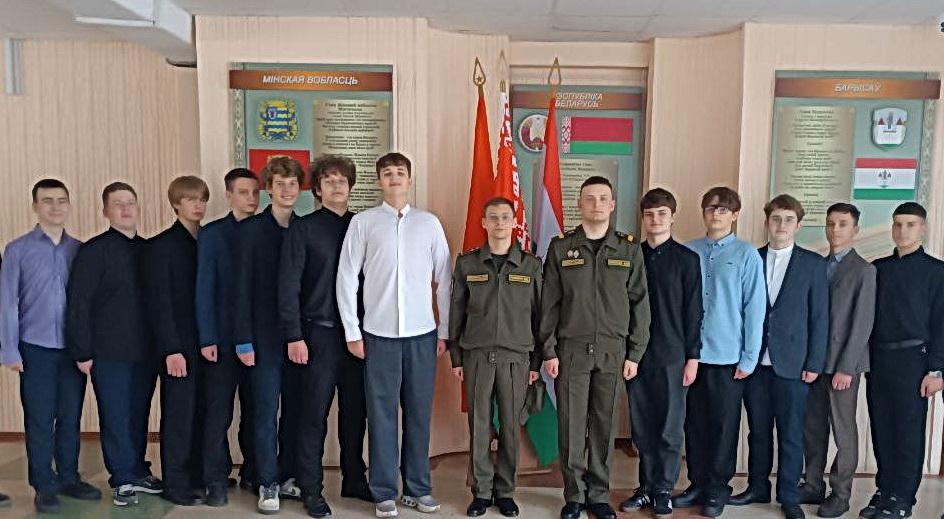

КРАСИВ В СТРОЮ – СИЛЕН В БОЮ!
В рамках взаимодействия с воинскими частями военнослужащие 60 отдельного полка связи Северо-западного оперативного командования провели занятие с учащимися 10 «А» класса по допризывной подготовке. чителя в погонах: лейтенант Иван Чувилин и младший сержант контрактной службы Артем Алексеев, обучили гимназистов перестроению из дношереножного строя в двухшереножный и выполнению строевых приемов при подходе к начальнику и отходе от него.


Индивидуальный подход к каждому учащемуся и грамотное проведение занятия отразились и на оценках. Классный журнал пополнился новыми девятками и десятками.


Военнослужащие полка связи всегда охотно принимают участие в различных мероприятиях военно-патриотической направленности гимназии. Спортивные состязания, профориентационные встречи, выставки средств связи, экскурсии в комнату Боевой славы полка – далеко не весь их перечень.
